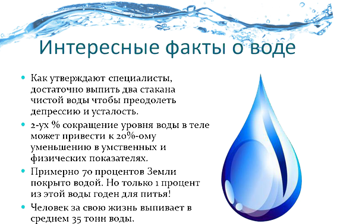

Вся правда о воде
Вся правда о воде
Человеческий организм на 60-70%, а младенческий на 80% состоит из воды.Пятимесячный плод состоит из воды на 94%(по этой причине для беременных девушек употреблять высококачественную воду особо важно).
Вода доставляет в клетки организма питательные материалы (витамины, минеральные соки) и уносит отходы жизнедеятельности.
Помимо этого, вода принимет участие в ходе терморегуля-ции и дыхания.
ЧИСТАЯ ВОДА - ЭТО ПРЕВОСХОДНОЕ САМОЧУВСТВИЕ
Одно с ключевых условий сбережения здоровья - употреблять достаточный объем воды.
Поддерживание в стандартном состоянии почти что всех функций организма, таких как кровяное давление, работа печени, почек, суставов, пищеварительной системы, требует воды.
С целью обычной службы абсолютно всех систем человеку нужно как как минимум 1,5 литра воды в день.
Парадоксальный феномен: вода нужна для существования, однако она же считается и одной из важнейших причин заболеваемости в обществе.
Угроза использования плохой воды может являться микробиологической: вода в природе имеет множество микроорганизмов,
многие из которых вызывают у человека тяжелые болезни, таковые, скажем, как холера, тиф, гепатит или же гастроэнтерит.
Засорение воды способен быть химическим. При этом исходы потребления нечистой воды имеют все шансы наступить как мгновенно, так и через несколько суток, месяцев, лет.

ЧИСТАЯ ВОДА - СУЩЕСТВЕННАЯ НЕОБХОДИМОСТЬ
Питьевой признается вода, подходящая к потреблению внутрь и отвечающая аспектам качества - в таком случае имеется вода не опасная, приятная на вкус.
К сожалению, водопроводная вода, какую мы как правило потребляем, в излишке содержит активный хлор и прочие примеси, полученные при прохождении по системам водоснабжения, часто старым и проржавелым...
Напрашивается вывод, то что в отсутствии воды наше существование немыслимо. А в отсутствии хорошей воды немыслимо хорошее существование.
ВЫБИРАЕМ ВОДООЧИСТИТЕЛЬ
Чтобы чистая вода существовала в Вашем доме, следует приобрести фильтр для воды.
Однако какой фильтр купить?
Этот, который покрасивее, либо тот, который рекламируется?
Импортный, либо отечественный фильтр с раздельным краном? Либо фильтр - кувшин?
Верным решением в данной задаче - приобрести тот, который лучше очищает воду.
И, разумеется, стоит ориентироваться на фирмы, с целью которых изготовление водоочистителей считается главной областью деятельности, и какие занимаются этим довольно уже давно.
Разновидности фильтров АКВАФОР (пр-во Российская федерация). Они предоставят Для вас возможность спокойно употреблять не опасную в абсолютно всех отношениях воду.
Фильтры АКВАФОР гарантированно устраняют из воды: хлор, фенол, пестициды, нефтепродукты, тяжелые металлы, нитраты, нитриты.
Фильтры Аквафор - это высокопроизводственные концепции единой очистки воды, насадки на кран, модели с отдельным краном.
Полезная привычка употреблять очищенную воду станет с признательностью воспринята вашим организмом!